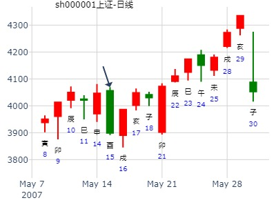

主帖标题: 1月25至1月29日大盘预测（日测）
明天周一涨跌
公历时间：2021年1月24日20时31分
干 支：庚子年 己丑月 壬申日 庚戌时
旬 空：辰巳 午未 戌亥 寅卯
兑宫：兑为泽（六冲） 震宫：雷水解
六神 【本 卦】 【变 卦】
白虎 ▄▄ ▄▄ 父母丁未土 世 ▄▄ ▄▄ 父母庚戌土
螣蛇 ▄▄▄▄▄ 兄弟丁酉金 ○ ▄▄ ▄▄ 兄弟庚申金 应
勾陈 ▄▄▄▄▄ 子孙丁亥水 ▄▄▄▄▄ 官鬼庚午火
朱雀 ▄▄ ▄▄ 父母丁丑土 应 ▄▄ ▄▄ 官鬼戊午火
青龙 ▄▄▄▄▄ 妻财丁卯木 ▄▄▄▄▄ 父母戊辰土 世
玄武 ▄▄▄▄▄ 官鬼丁巳火 ○ ▄▄ ▄▄ 妻财戊寅木
与月组成三合兄弟局。
主帖标题: 个股预测大赛: 中国人寿601628 每日预测：4月9日
以下是引用六天圣精奉还在2008-4-9 7:33:00的发言：
占事: 中国人寿9日收盘和8日收盘
起卦方式：手动摇卦 线上排盘系统
公历时间：2008年4月8日18时30分
干支：戊子年 丙辰月 戊寅日 辛酉时 旬空：午未 子丑 （ 申酉 ） 子丑
兑宫：兑为泽（六冲） 震宫：雷水解 六神 【本 卦】 【变 卦】
朱雀 ▄▄ ▄▄ 父母丁未土 世 ▄▄ ▄▄ 父母庚戌土
青龙 ▄▄▄▄▄ 兄弟丁酉金 O-> ▄▄ ▄▄ 兄弟庚申金 应
玄武 ▄▄▄▄▄ 子孙丁亥水 ▄▄▄▄▄ 官鬼庚午火
白虎 ▄▄ ▄▄ 父母丁丑土 应 ▄▄ ▄▄ 官鬼戊午火
螣蛇 ▄▄▄▄▄ 妻财丁卯木 ▄▄▄▄▄ 父母戊辰土 世
勾陈 ▄▄▄▄▄ 官鬼丁巳火 O-> ▄▄ ▄▄ 妻财戊寅木
中国人寿9日收盘和8日收盘，是上涨，还是下跌?
很遗憾昨天晚上没有看到你的帖子，这个卦太明显了，三合兄局，大跌之象，早看到这卦，我也不会在别的帖子里断大盘今天小涨了，直接断小跌了。
王注：申酉旬空，被冲实。寅卯日也得跌。寅日跌幅小，生官鬼克兄弟。
时间: 2017-04-01
干支: 丁酉年癸卯月戊午日 (旬空: 子丑 )
兑为泽 雷水解
六神 伏神 本 卦 变 卦
朱雀 ▅▅ ▅▅ 父母未土 世 ▅▅ ▅▅ 父母戌土
青龙 ▅▅▅▅▅ 兄弟酉金 Ｏ→ ▅▅ ▅▅ 兄弟申金 应
玄武 ▅▅▅▅▅ 子孙亥水 ▅▅▅▅▅ 官鬼午火
白虎 ▅▅ ▅▅ 父母丑土 应 ▅▅ ▅▅ 官鬼午火
腾蛇 ▅▅▅▅▅ 妻财卯木 ▅▅▅▅▅ 父母辰土 世
勾陈 ▅▅▅▅▅ 官鬼巳火 Ｏ→ ▅▅ ▅▅ 妻财寅木
主帖标题: 上海大盘走势（上证指数）每日预测
占事: 5月15日上证指数000001趋势
起卦方式：手动摇卦 周易天地www.64gua.com六爻线上排盘系统
公历时间：2007年5月15日1时11分
干支：丁亥年 乙巳月 己酉日 乙丑时
旬空：午未 寅卯 寅卯 戌亥
兑宫：兑为泽（六冲） 震宫：雷水解
六神 【本 卦】 【变 卦】
勾陈 ▄▄ ▄▄ 父母丁未土 世 ▄▄ ▄▄ 父母庚戌土
朱雀 ▄▄▄▄▄ 兄弟丁酉金 O-> ▄▄ ▄▄ 兄弟庚申金 应
青龙 ▄▄▄▄▄ 子孙丁亥水 ▄▄▄▄▄ 官鬼庚午火
玄武 ▄▄ ▄▄ 父母丁丑土 应 ▄▄ ▄▄ 官鬼戊午火
白虎 ▄▄▄▄▄ 妻财丁卯木 ▄▄▄▄▄ 父母戊辰土 世
螣蛇 ▄▄▄▄▄ 官鬼丁巳火 O-> ▄▄ ▄▄ 妻财戊寅木
动爻力量强过静爻冲实，故酉日大跌。
戌日又合卯，涨。卯日冲开酉涨。

姓名： 出生年:1981 性别：男 占事：鸡蛋1409下周
起卦方式：手动摇卦 易经股市论坛 www.yijingstock.com 在线排盘系统
公历时间：2014年5月18日9时10分
干 支：甲午年 己巳月 己丑日 己巳时
旬 空：辰巳 戌亥 (午未) 戌亥
兑宫：兑为泽（六冲） 震宫：雷水解
勾陈 ▄▄ ▄▄ 父母丁未土 世 ▄▄ ▄▄ 父母庚戌土
朱雀 ▄▄▄▄▄ 兄弟丁酉金 O-> ▄▄ ▄▄ 兄弟庚申金 应
青龙 ▄▄▄▄▄ 子孙丁亥水 ▄▄▄▄▄ 官鬼庚午火
玄武 ▄▄ ▄▄ 父母丁丑土 应 ▄▄ ▄▄ 官鬼戊午火
白虎 ▄▄▄▄▄ 妻财丁卯木 ▄▄▄▄▄ 父母戊辰土 世
螣蛇 ▄▄▄▄▄ 官鬼丁巳火 O-> ▄▄ ▄▄ 妻财戊寅木
摇卦日三合兄弟局，19寅日没有冲开跌。
卯日冲开动爻，涨。辰日又合动爻酉大跌。
酉日还是大跌。

九戒 2014-5-23 19:43:48
这个兄弟退 大跌
20:01:17
九戒 2014-5-23 20:01:17
大道至简:
这个不论化退了
论三合局了
九戒 2014-5-23 21:53:59
对
大道至简 2014-5-23 21:54:03
日月参与
九戒 2014-5-23 21:54:17
是的
大道至简 2014-5-23 21:54:33
可以收库
大道至简 2014-5-23 21:54:41
有的明显错误的卦，不能收库
九戒 2014-5-23 21:54:42
当时 看疏忽了
九戒 2014-5-23 21:54:52
嗯

九戒 22:45:14 姓名： 出生年:1981 性别：男
占事：385神火股份 722两周
起卦方式：手动摇卦 易经股市论坛 www.yijingstock.com 在线排盘系统
公历时间：2014年7月22日22时37分
干 支：甲午年 辛未月 甲午日 乙亥时 旬 空：辰巳 戌亥 (辰巳) 申酉
兑宫：兑为泽（六冲） 震宫：雷水解
玄武 ▄▄ ▄▄ 父母丁未土 世 ▄▄ ▄▄ 父母庚戌土
白虎 ▄▄▄▄▄ 兄弟丁酉金 O-> ▄▄ ▄▄ 兄弟庚申金 应
螣蛇 ▄▄▄▄▄ 子孙丁亥水 ▄▄▄▄▄ 官鬼庚午火
勾陈 ▄▄ ▄▄ 父母丁丑土 应 ▄▄ ▄▄ 官鬼戊午火
朱雀 ▄▄▄▄▄ 妻财丁卯木 ▄▄▄▄▄ 父母戊辰土 世
青龙 ▄▄▄▄▄ 官鬼丁巳火 O-> ▄▄ ▄▄ 妻财戊寅木
此处午火克兄弟，为喜。但申酉二天也涨，不知为何？
注：此卦大多为跌，唯此例涨得多。难不成己午未三会官鬼，克制兄弟？